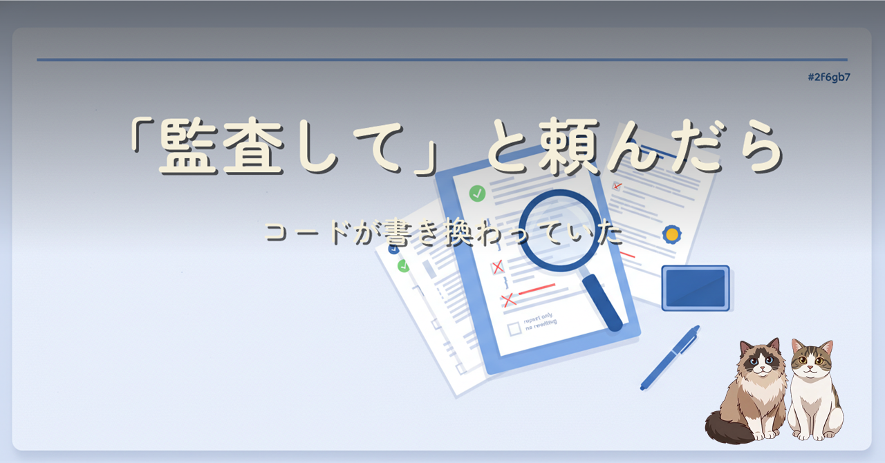
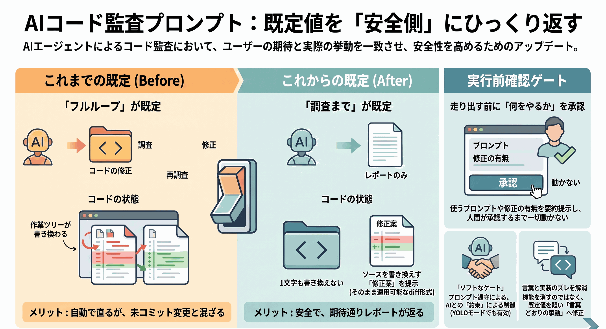
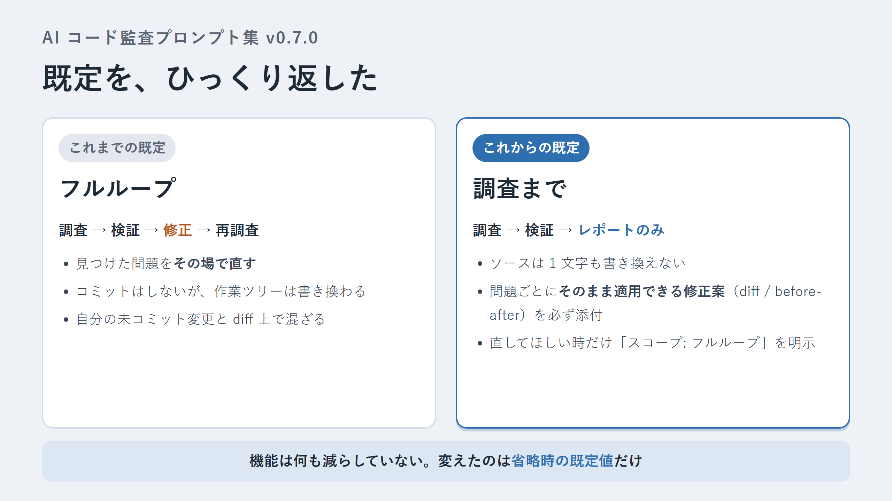
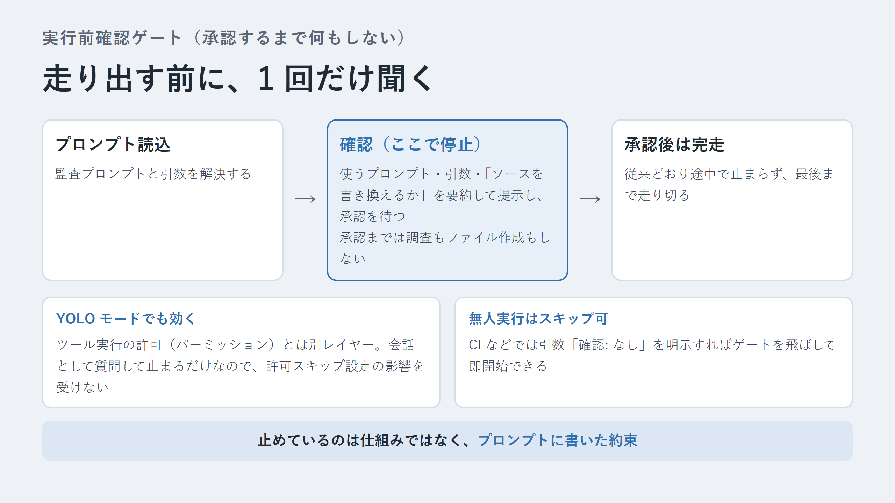

AI にコードを監査させるプロンプト集の続編。「監査して」と頼んだのに作業ツリーが書き換わっていた違和感から、既定スコープを「レポート＋そのまま適用できる修正案」に反転し、走り出す前の承認ゲートを足しました。機能は消さず、省略時の既定値だけを変えた設計判断の記録です。
コミット禁止で縛っていたから安全なつもりでいたのに、「監査」という言葉が期待させるのはレポートであって、書き換えではなかった。修正機能は削らず、スコープ引数の既定を「フルループ」から「調査まで」へ反転し、確定した問題ごとに diff / before-after の修正案を必ず添えさせる形に変えた話です。
あわせて、実行前に「使うプロンプト・引数・書き換えの有無」を要約提示して承認を待つゲートを追加。ツール実行のパーミッションとは別レイヤーの会話ベースの合意なので、いわゆる YOLO モードでも機能します。



プロンプト集本体: ishizakahiroshi/ai-audit-prompts